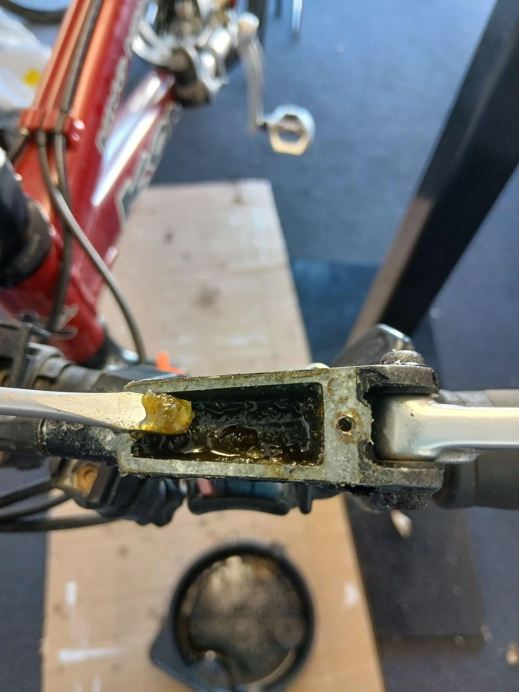

We’ve all heard it before - someone riding down a hill with their brakes squealing loud enough for the whole forest to hear. Annoying for everyone around, and potentially embarrassing for the rider of the bike! In this article I’ll cover what causes common brake issues and noises and how to solve them.
Contaminated brake pads
“Contaminated brake pads” is the term bike mechanics use when oil, grease or other lubricants have made their way onto the brake disc and brake pads. The most common causes of this are overspray from aerosols such as bike polish, spray on chain lube, CRC or WD40. In rare and unlucky circumstances, the contaminants can also come from a leaking brake or oily road spray from being on the bike rack. One common thing we hear is “my brakes were squealing so I sprayed CRC on them”. Unfortunately, this will only make the problem worse! When your brakes are squealing like this, you may also notice the braking power isn’t as good as it once was.
To resolve this, the most reliable option is to clean the brake rotors, buff them with sandpaper or similar, and replace the brake pads. Some people try to clean the brake pads, but as the material is porous, the braking surface soaks up the contaminants deep into the brake pad; it may work for a ride or two, but the squealing almost always comes back.
Brakes rubbing
Rubbing brakes can be caused by a few different factors. Often the rubbing is very minor, and while there might be a quiet, slightly annoying noise, there generally isn’t any effect on the brakes performance. However, it is still nice to have it sorted, and it could also be a sign of a bigger issue.
- Mis-aligned brake: Minor brake rubbing is often solved by a simple brake caliper alignment or brake rotor straightening. These adjustments are normally straightforward and included in every service I offer. In these adjustments, I make sure the brake rotor is centred between the two brake pads and the rotor and caliper are straight.
- Bent brake rotors: If you spin the wheel and hear intermittent rubbing, this is often a sign of a bent brake rotor. Bike disc brake rotors are normally just 1.75 - 2.2mm thick so they are easily bent. Fortunately, they are also normally easy to bend back.
- Worn brake pads: When brake pads become excessively worn they often stop moving away from the brake rotor properly when you release the brake. In this case, resetting the brake caliper and changing the brake pads will normally have the brake running its best again.

Brake bleeding
If your brake levers feel soft or pull all the way to the handle bar, there is a good chance that the brakes need a bleed. This is where I replace the brake fluid and remove any air that is trapped in the system. New, clean brake fluid is also a good idea for the general health of your brake as it removes the old, dirty fluid from the system and lubricates the internal parts.

Bigger issues
There are a couple other causes of rubbing brakes that I see every now and again:
- Swollen seals in Sram or Avid brakes: If the lever in your Sram or Avid Brake is slow to extend back to its normal position after releasing the brake lever, or it just feels a bit off, swollen seals are often the cause. This swelling happens over time as the seals react with the brake fluid. Fortunately, in Sram brakes, these parts can normally be replaced and the updated parts are supposed to be more durable.
- Cracked brake piston: This is most commonly seen on mid - high end Shimano brakes which use ceramic pistons. While I have seen cracked pistons on brand new brakes, cracks normally occur during brake pad replacement if not done properly. When one or more pistons are cracked, they often jam, leading to rubbing brakes. The broken piston may also allow brake fluid to leak, causing contaminated brake pads. Unfortunately, Shimano doesn’t sell replacement pistons for their brakes, although off-brand replacements can be found on sites such as AliExpress and Temu.
- Sticky brake pistons: While most common on Sram brakes, sticky brake pistons can affect all types of brake. The brake will feel perfectly normal under braking, but when the brake is released, the pistons don’t retract properly. This normally causes the brake to rub. Generally, this can be solved by carefully extending each brake piston, cleaning the piston and seal before applying a tiny amount of appropriate lubrication. Some sticky pistons are caused by wear on the brake pistons, in which case they will need to be replaced for best results.
Disc brakes are normally simple and reliable, but when something goes wrong, the cause isn't always obvious. Whether your brakes need a simple adjustment, new pads or a more involved repair, Bottle Lake Bikes can help diagnose the problem and get your brakes performing as they should.
Keep reading
Servicing Explained